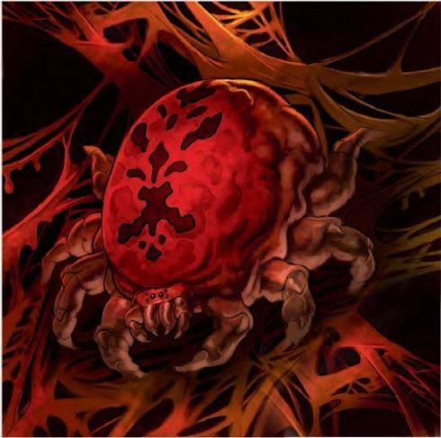

这只腹部膨胀的蜘蛛有如一头狼一般大小，长着粗壮有力的腿，背后生长着一个又大又红的肉质肿块。
描述与它们常见的表亲一样，血丝蜘蛛是伏击型掠食者，以猎物的体液为食。它们潜伏在赤红色的蛛网中，利用这些蛛网从被困住的生物身上吸取血液。
战术与策略与普通甚至凶暴的虫类不同，血丝蜘蛛拥有狡诈的智力。它们会攻击任何活物以获取血液，利用蛛网捕捉并杀死更多猎物。它们个体实力不强，因此偏好集群攻击，通常为四到八只一起行动。其中一只蜘蛛会先用喷吐蛛网发起攻击，其余蜘蛛随即冲向被缠住的对手。
独行的血丝蜘蛛会将蛛网张在森林小径旁的两棵树、两块岩石或类似的地标之间。蜘蛛潜伏在附近，利用其震颤感知能力侦测敌人的接近。一旦有生物被蛛网困住，蜘蛛便会跃出攻击。蛛网会吸干猎物的血液，同时蜘蛛用螯牙撕咬。
当血丝蜘蛛面对体型比自己大的对手时，它们总会先杀死一些较弱的猎物（从而获得临时生命值），然后才攻击更危险的敌人。
"第三天，我们遇到了两个伐木工，他们讲述了一个关于红色蛛网的故事。卢米恩王子决定亲眼去看看这些蛛网，并说服了圣者伊利克斯与他同行。我们再也没有见到他们――活着的。"――皇家卫队成员，古尔杜
遭遇范例血丝蜘蛛是耐心而狡诈的杀手。
单独个体（EL 2）：一只血丝蜘蛛会使用"躲藏与突袭"战术来惊吓猎物。大约十分之一的情况下，单独的血丝蜘蛛刚刚进食过，并储存了5点临时生命值。
集群（EL 6-8）：四到八只血丝蜘蛛潜伏在树叶或瓦砾中，等待猎物经过。
巢穴（EL 8-10）：一个血丝蜘蛛巢穴可能包含八到十六只个体。其中至少一半的蜘蛛刚刚进食过，每只拥有5到10点临时生命值。
生态学血丝蜘蛛的生存与繁殖方式与其他蜘蛛类似。他们喜欢在植被茂密的区域安家，尤其是如果该地区有大量可供捕食的动物。当地的猎物耗尽之后，蜘蛛便会迁往其他地方。如果当地的森林中有大量的巨型黄蜂或蜘蛛捕食者（这两种生物都是血丝蜘蛛致命的敌人），那么血丝蜘蛛可能会选择栖息在废墟之中。如果该地区的猎物十分稀缺，即使其他种类的巨型蜘蛛也会给血丝蜘蛛带来麻烦。
环境血丝蜘蛛只要生活在温暖的温带森林及沼泽地带，尤其是巨大的树木周围或茂密的灌木丛区域，这让他们能更轻松的融入其中。
典型特征典型的血丝蜘蛛体长约三英尺，体重在40-50磅之间。
阵营血丝蜘蛛是食肉动物，通常不会持有任何道德立场。那些生活在被恶意污染的区域内的蜘蛛可能会倾向于邪恶。
典型宝藏与其他体型巨大的蜘蛛一样，血丝蜘蛛并不搜寻宝藏，但其巢穴中有50%的几率会有一些来自猎物遗留下来的硬币物品和装备，针对每种类型的宝藏，分别进行独立的掷骰计算。
艾伯伦的血丝蜘蛛血丝蜘蛛是冒险者穿越埃丁原野的高耸林地时可能遇到的众多危险之一。粗心的探索者如果忽略了血丝蜘蛛幼体留下的明显蛛网痕迹，很容易误入它们的巢穴。在幽暮森林中，大量血丝蜘蛛滋生，它们的蛛网在那片扭曲森林的永恒幽暗中几乎难以辨认。血丝蜘蛛偶尔会游荡到林地边缘，对埃丁原野的定居者构成威胁。
费伦的血丝蜘蛛在费伦，血丝蜘蛛栖息于南部的大森林中，最著名的是琼达森林，那里体型异常巨大的蜘蛛生活在危险的植物之间。半身人游侠和德鲁伊也会偶尔集结起来，对抗琉尔森林内的血丝蜘蛛 infestation。此外，在沙尔附近的许多其他森林中也能找到血丝蜘蛛的巢穴，包括库尔特森林和边境王国的荆棘森林。有传言称，血丝蜘蛛是由卡林珊法师的诅咒所诞生的，那个诅咒毒化了库尔特森林，而血丝蜘蛛作为一种致命的新蜘蛛，在法师死去很久之后仍持续繁衍至今。
| 资料栏位 | 血丝蜘蛛（Bloodsilk Spider） 小型魔法兽 |
|---|---|
| 生命骰 | 2d10（11HP） |
| 先攻 | +3 |
| 速度 | 30尺（6格）；攀爬20尺 |
| 防御等级 | 16(+1体型，+3 敏捷，+2天生)，接触14，措手不及13 |
| 基本攻击/擒抱 | +2/ -3 |
| 攻击 | 近战 啮咬+6(1D6-1)或远程 血网+6远程接触（纠缠） |
| 全力攻击 | 近战 啮咬+6(1D6-1)或远程 血网+6远程接触（纠缠） |
| 面宽/触及 | 5尺/ 5尺 |
| 特殊攻击 | 血液吸取 |
| 特殊能力 | 黑暗视觉60尺，颤动感知60尺 |
| 豁免 | 强韧+3，反射+6，意志+0 |
| 属性 | 力量9，敏捷16，体质 10 ，智力 2，感知10，魅力2 |
| 技能 | 攀爬+11，躲藏+12*，聆听 +0，潜行+3*， 侦查+4 |
| 专长 | 武器娴熟 |
| 环境 | 见后文（未翻） |
| 组织 | 见后文（未翻） |
| 挑战等级 | 2 |
| 宝物 | 无 |
| 阵营 | 通常绝对中立 |
| 进化 | 3-4HD（小型）；5-8HD（中型）；9-12HD（大型） |
| 等级调整 | ― |
血丝蜘蛛，与它们凡类的表亲类似，是以它们猎物的血液为食的伏击掠食者。它们潜伏在用于从被困生物身上吸取血液用的，变成红色的网中。
战斗与普通的，以及大多数昆虫怪物不同，血丝蜘蛛拥有堪称狡诈的智力。它们会为了血液攻击任何活着的生物，使用它们的网来捕捉以至杀掉更多的生物。它们从个体角度而言并不有力，所以它们更喜欢集群进攻，通常四个或八个一组。它们中的一个使用喷射血网发起攻击，其余的则在此后冲锋任何被困住的对手。
落单的血丝蜘蛛会沿着森林中的道路在两棵树，两块岩石，或者类似的物体之间张开网。它潜伏在一边，利用其颤动感知能力来探测敌人的接近。一旦有生物被网捆住，血丝蜘蛛会跳出攻击。当蜘蛛用它的下颚啮咬对手时，血网也会吸取猎物的血液。
血丝蜘蛛在与比自己体型大的对手战斗时，总是会在攻击更危险的对手之前杀掉一些弱小的猎物（并且因此获得临时生命值）。
血液吸取（Blood Drain）（Su）：每轮以一个迅捷动作，血丝蜘蛛可以控制它的网钻入被捕捉生物的身体里，吸取他们的血液并输送给它。血丝蜘蛛必须与它的网接触才能使用此能力。血丝蜘蛛的网在每轮开始时对被诱捕的对手造成1D4点伤害。此能力不会影响元素，植物，或其他无体质属性的生物。血丝蜘蛛将获得等同于此能力所造成伤害的临时生命值。它不能以此能力获得多于10点的临时生命值。这些临时生命值最多保持24小时。
血网（Blood Web）（Ex）：每天八次，血丝蜘蛛可以投出一张血红色的网。这与用捕网进行的攻击类似，但其最大射程为50尺，射程增量为10尺，且可以影响比蜘蛛体型最多大一个级别的生物。这种网会将目标固定在原地，使其无法移动。如果扯动血网以逃离的被困生物有一些东西可以踩住或抓住，尝试逃脱或打烂血网的检定获得+5加值。被纠缠住的生物可以通过一个标准动作进行DC11的脱逃检定以逃离，或者通过DC15的力量检定以打烂血网。检定DC基于体质，且力量检定中包含了+4种族加值。血网有12点HP，硬度为0。不像普通的蜘蛛网，浸泡在血网上的血液使得血网免疫火焰伤害。血丝蜘蛛可以创造出从5尺见方到20尺见方不等的粘稠血网。血网由被吸血的受害者的鲜血染成红色，在某些部位网子也会滴下血液。血丝蜘蛛通常通过设置这些网来诱捕飞行生物，不过它也试图捕捉地面上的生物。接近血网的生物必须通过一个DC20的侦查检定以发现网；否则他们就会被卷入血网，并如同被投掷血网击中一般被困。每5尺血网拥有12点生命值与DR5/-。血丝蜘蛛可以用攀爬速度通过它自己的网，也可以精确定位任何接触到网的生物。
技能：血丝蜘蛛在躲藏检定上有+4种族加值（在它自己的网中除外，见上文），在侦查检定中有+4种族加值。血丝蜘蛛在攀爬检定上有+8种族加值并且总是可以选择在攀爬检定中取10，即使是在匆忙或是被威胁的情况之下。它使用自己的力量与敏捷调整值中的较高者进行攀爬检定。
在知识（神秘）上有级数的人物可以更多地了解血丝蜘蛛。当人物成功通过技能检定时，以下知识将被揭示，其中包括了更低DC的信息。
| 知识（神秘） | 结果 |
|---|---|
| DC 12 | 血丝蜘蛛是因其喷出的血红色蛛网而得名的魔法兽。这个结果揭示了其所有魔法兽特性。 |
| DC 17 | 血丝蜘蛛的网能钻入被困住生物的血肉来吸取血液。这种蜘蛛以通过蛛网吸取的血液为食，并在这个过程中变得更强。 |
| DC 22 | 血丝蜘蛛是耐心而狡诈的猎手。当猎杀比自己大的生物时，它会先捕食小的猎物来吸取生命力，以便战斗。 |
| DC 27 | 血丝蜘蛛的巢穴十分危险，因为这些巢穴已经布满了血网。 |